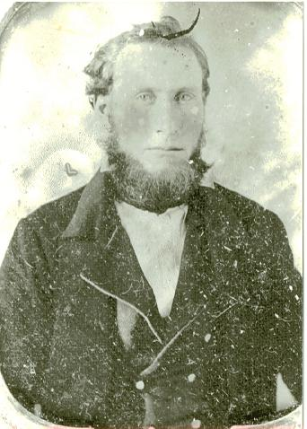

Georgia GeorgiaLumpkin County |
|
Lumpkin County 1830s 1832 Lumpkin County formed from Cherokee County 1833 November 25 - Lumpkin Co DB B pg 80 - Indenture between Balaam Dowdy of Lumpkin Co to Amos Dowdy of Hall Co; $125; tract of land containing 40 acres in the 12th District, 1st Section of Lumpkin Co, Lot #505 <s> Balom Dowdy Wit: John McLeod, Robert Dowdy Jr. Recorded 13 September 1834 on oath by Robert Dowdy 1834 Lumpkin Co Census
1834 November 3 - Lumpkin Co DB B pg 243 - Indenture between Dean David of Muscogee Co GA to Charles Dowdy county aforesaid (Lumpkin) $500 land situated in Lumpkin Co known by Lot #479 in the 12th District, 1st Section of formerly Cherokee Co containing 40 ac <s> David Dean. Wit: Balaam Dowday, William Thompson. Recorded 4 November 1834 1837 September 13 - Lumpkin Co DB E pg 47 - Indenture between Amos Dowdy and Isaac Sowell of the one part and Richard Head of the other (no residences given) $100, sold to Richard Head tract of land lying in 12th District of 1st Section of said county Lumpkin, Lot #767 contaiing 40 acres <s> Amos Dowdy <s> Isaac Sowell Wit: Jas F Kiser, William Findley. Recorded 6 October 1837 1838 March 17 - Lumpkin Co DB H pg 320 (pwr atty); (deed) - Walker Co Alabama - William Dowdy of said county and state aforesaid (Walker Co AL) to David Myers of Marion Co GA power of atty to sell land 4th District, 1st Section, Lot #202; <s> William Dowdy Wit Thomas Wilson, Major Pruitt. Recorded 2 April 1844 1839 March 6 - Lumpkin Co DB E pg 447 - Indenture between William Flanagan by his attorney John Anderson of Lumpkin Co to James Dowdy of Lumpkin Co $100. Land lying in 4th District, 1st Section, originally Cherokee now Lumpkin Co containing 40 acres. It being Lot #23 <s> William Flannigan by his atty John Anderson Wit John D Field Junr, Thomas J Eubanks JP, Recorded 28 March 1839 1840s 1840 Lumpkin County Census
April 3, 1840, Southern Banner pg 3 - Lumpkin Sheriff Sale - Lot No 479 in the 12th Dist. and 1st Section: levied on as the property of Charles Dowdy, to satisfy a fi. fa. issued from Lumpkin Superior Court in favor of T. V. Hopkins vs said Dowdy 1841 March 2 - Lumpkin Co DB G pg 124 - Indenture between Charles Dowdy of Lumpkin Co to Wm Anderson $500 tract of land in Lumpkin Co #429 in 12th District of originally Cherokee Co, now Lumpkin <mark> Charles Dowdy Wit: Wm B Hubbard, J S Chastain JP Recorded 20 March 1841 1840 July 1 - Lumpkin Co DB H pg 321 - Chatham Co GA - Indenture between William Dowdy of Alabama by his atty David R Myers of Muscogee Co of 1st part and Thomas Kemp of county first named (Chatham Co); $10; sold a tract of land to Thomas Kemp lying in Cherokee, now Lumpkin Co Lot #202 containing 40 acres <s> William Dowdy by his atty David R Myers Wit: Joh Griffith, Wm C Wylly JP, Recorded 2 April 1844 1841 October 2 - Lumpkin Co DB H pg 136 - Habersham County - Indenture between James Dowdy of Cherokee Co to Samuel Stainbridge of Habersham Co; $75; tract of land in Lumpkin Co it being Lot #23 in the 4th District, 1st Section <s> James Dowdy Wit: Elizabeth O'Kelly, John P O'Kelley. Recorded 20 February 1843 1844 January 15 - Lumpkin Co DB H pg 299 - Walton County - Indenture between William Brooks of county aforesaid (Walton Co) to James Dowdy of Cherokee Co; $50; Tract of land lying in Lumpkin Co (originally Cherokee) known as (Lot #) 481 of 12th District, 1st Section containing 40 acres, except the gold on the land which Wm Brooks reserves for himself <mark> William Brooks Wit Theophilus J Hill, Momen J Hill J J C. Recorded 20 March 1844 1846 February 16 - Lumpkin Co DB I pg 231 - Indenture between John & Wm Anderson to James Dowdy of same place; $200; a tract of land lying in 12th District of 1st Section of Lumpkin Co, known by Lot #479 <s> Wm Anderson <s> John Anderson Wit: J L Riley, J H Wortey JP. Recorded 12 March 1846. 1846 April 8 - Lumpkin Co DB J pg 539 - Indenture between James Dowdy of Lumpkin Co to Wm Anderson and John Anderson of Lumpkin Co $300 land situated in the 12th District of the 1st Section originally Cherokee now Lumpkin containing 80 acres, Lot #479 and #481 <s> James Dowdy Wit: B E Hatfield, William Tate. Recorded 12 Dec 1849
1846 August 31 - Lumpkin Co DB J pg 151 - Indenture between Willis W M Dowdy of Harris Co GA to Mathew Keith of Hall Co GA; $400; a tract of land known as Lot #1046 in the 4th District, 1st Section of Lumpkin Co <s> Willis W M Dowdy. Wit: J W Looper, Alfred Webb. Recorded 9 September 1847 1847 Lumpkin Co DB P pg 130 - Amos Dowdy to Isaac Dowdy 1850s 1850 Lumpkin Co Census
1851 February 18 - Lumpkin Co DB K pg 390 - Indenture between Amos Dowdy to E K Brown (residences not stated, presumably Lumpkin); $300; tract of land Lot #546 and about 1/2 Lot #505 [description of lot division] being all that part of said Lot not heretofore deeded to Isaac Dowdy, both Lying in 12th District, 1st Section <s> Amos Dowdy Wit: Sasan Brown, MP Quillian NP. Recorded 1 March 1851 1852 January 9 - Lumpkin Co DB L pg 51 - Indenture between Wm Anderson of one part and Amos Dowdy of other part; $100; Sold to Amos Dowdy tract of land in the 15th District, 1st Section of Lumpkin Co, Lot by number #418 <s> Wm Anderson. Wit: James M Battle, Abraham Howard JP. Recorded 19 May 1852 1851 January 19 Lumpkin Co DB L pg 51 - I Amos Dowdy being of sound disposing mind and memory and desiring that my beloved wife Elizabeth Dowdy shall at my death have and be the sole heir to the lot of land within mentioned in the within deed to wit No 418 in the 13th district 1st section do hereby and by these presents will and bequeath to my wife Elizabeth said lot of land with all its appertenances free from the claims of my heirs other than m wife and that at my death said lot of land shall inure to her forever. In witness whereof said Amos Dowdy has hereunto set his hand and seal this 19th day of January 1852. <s> Amos Dowdy Signed in presence of Wm Anderson, James M Battle, Abraham Howard JP. Recorded 10 May 1852. Note: this deed entry directly follows Amos Dowdy's purchase of Lot 418 from Wm Anderson and is clearly an addendum to that purchase. 1855 Lumpkin Co Court of Ordinary Minute Book pg 72 - In Open court personally appeared John Dowdy minor and orphan child of George C Dowdy deceased and over the age of 14 years and prays the granting of an order appointing Henry Berry his guardian for his person and property the said Henry [ ] yileding his consent the said Henry brings forward Amos Dowdy H[ ] of [ ] for his security. It is therefore ordered by the court that letters [ ] to said Henry Berry on his complying with the statute and taking the oath usual in such cases. Apr 2nd 1855 Jas R Sauthen. 1856 Lumpkin Co Court of Ordinary Minute Book pg 101 - Upon the petition of Henry Berry guardian for John Dowdy minor child of George C Dowdy dec'd stating that he is in possession of an 80 ac warrant No 18866 the property of his said ward and that the same will likely lessen in value if compelled to [adminster?] the same for sale 40 days as usual in such cases and prays this court to [ ] an order allowing his siad applicant to bring the same to sale at a [ ] and day as to the court may [ ] might and propose [Court granted] April 7 1856. 1858 June 21 Lumpkin Co Estate Returns pg 180 - Sale of Land Warrant. 70.00 State of Georgia in open court personally appeared Henry Berry Lumpkin County and guardian for John Dowdy who being duly sworn says that the foregoing return is just and true Sworn 21 June 1858 <mark> Henry Berry 1859 Mar 4 Lumpkin Co Estate Returns pg 218 - Henry Berry guardian [John Dowdy name not mentioned, but indexed] in account; viz Amt on hand at last return $21.45; Mar 4 1859 by amt J R Sauhen ordy 7.50; Amt paid ward as per vou. No 2 14.25. Sworn, etc etc. Mar 4th 1859 <mark> Henry Berry 1870s Oct 20 1876 The Constitution (Atlanta) - Jacob Dowdy of Lumpkin County raised a pumpkin measuring 30 inches in diameter and 40 in circumference 1880s August 27, 1886 Dahlonega Signal - Death of an Aged Lady - Mrs. Dowdy, wife of Rev. Jno. Dowdy, of this county, died on Monday night. She had been sick for many years and death was, no doubt, a pleasant relief for her. Mrs. Dowdy was about seventy-five years old, and was held in high esteem by her host of friends. She was a devoted and consistent member of the Siloam Baptist Church. Sept 10 1887 Dahlonega Signal - Two strange men have been lounging around on the Cleveland road about 6 miles from town. Tuesday they entered the house of John Sargent while he was absent and began to plunder but Mrs Sargent coming up they hastily ran away. Wednesday morning while William Dowdy and his wife were away from home they entered adn stole several articles and some food. they were seen running away just as Mr Dowdy came up. Mr Dowdy organized a crowd and they searched for the thieves until twelve o'clock Wednesday night, but could not locate them, they having took to the woods. 1890s July 25, 1890 Dahlonega Signal - Death of Aaron Dowdy - Old Uncle Aaron Dowdy, as he was always called, since our early childhood, departed this life last Saturday, the 19th July 1890. He had been a resident of this county since it's early settlement, his occupation being that of a farmer. He was ninety-six years of age, and was a pensioner of the government for his services in the War of 1812. He and the father of the writer of this article being members of the regiment who enlisted in Raleigh, North Carolina, in 1813. There are but few Jackson soldiers living, and perhaps Uncle Aaron is th elsat survivor in this county. Peace to his ashes. January 6, 1893 Dahlonega Signal - Rev John M. Dowdy, one of our oldest citizens of the county, died at his home near this place on the 28th December 1892. He was buried by the Masonic Fraternity at Siloam on the following day. He leaves a large circle of friends to lament his death, although he had lived up to the full measure of his days, being more than eighty years of age. He was born April 26th 1807., and had been a citizen of Lumpkin County for more than fifty-five years and a minister of the gospel for thirty-eight years. 1895 Chesatee Baptist Association Minutes - Yahoola Church has lost two of her members...Rachel Dowdy died September 2nd, 1895, aged eighty years. Marriages 1829-1922+ (source:
Lumpkin
County GenWeb) Grooms (note: marriages which seem to have incomplete
dates appear to be referring to years after 1900) Marriage Book B 1849-1865 page numbers (seems to be
different than the list above) additional marriage listings from the Lumpkin Co Library (some
are duplicates but some are not) Lumpkin Cemeteries MIll Creek Baptist Church Civil War Read the biography of Private John H. Dowdy of Lumpkin GA (killed in service) - with photo  d 30 Jun 1848 in Lumpkin County, Georgia; buried Siloam Cemetery Lumpkin County; s/o Amos Dowdy and Effie Carlton of Moore Co NC. Married Minerva Fendley 12 Nov 1839 in Lumpkin County, Georgia
|